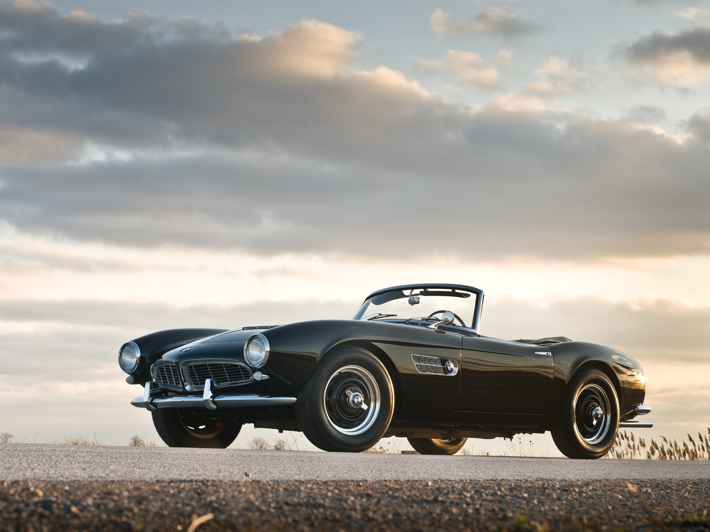

Roadster
Un deportivo roadster es un automóvil con prestaciones superiores a la media. Su tamaño suele ser cercano a automóviles de los segmentos B, C y D
Un coche roadster es biplaza y descapotable, podemos decir que es la esencia de la conducción
Historia de los roadster
Los primeros vehículos roadster contaban con unas estructuras básicas, no tenían ni puertas, ni ventanas, ni cualquier protección de la intemperie.
No fue hasta el año 1920, cuando se empezaron a instalar elementos similares a los que tenían los turismos convencionales, como las puertas o las ventanas.
En los años 1970, el término roadster se aplicaba a cualquier biplaza con cierto carácter deportivo, los cuales iban más equipados que en sus inicios.
Aunque en la actualidad aún se siguen fabricando roadsters con las mismas características que los iniciales, no son los que mejores ventas tienen, suelen ser fabricantes más especializados con modelos más limitados.
Caracteristicas de los roadster
Para considerar un vehículo como un roadster es necesario que este cumpla con algunas características.
- Debe contar tan solo con dos plazas, es decir, ser un vehículo biplaza
- Que sean vehículos descapotables o con un techo lijero, que no sea de metal
- Deben contar con tracción trasera
